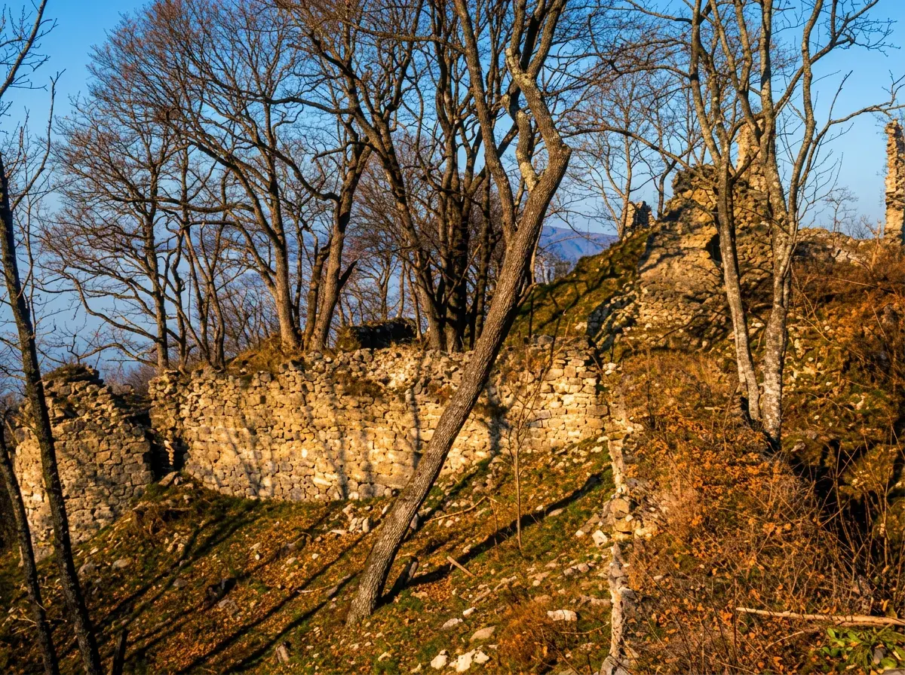
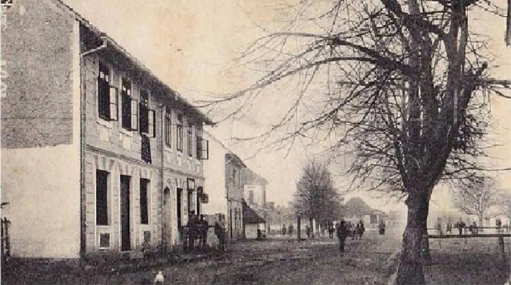
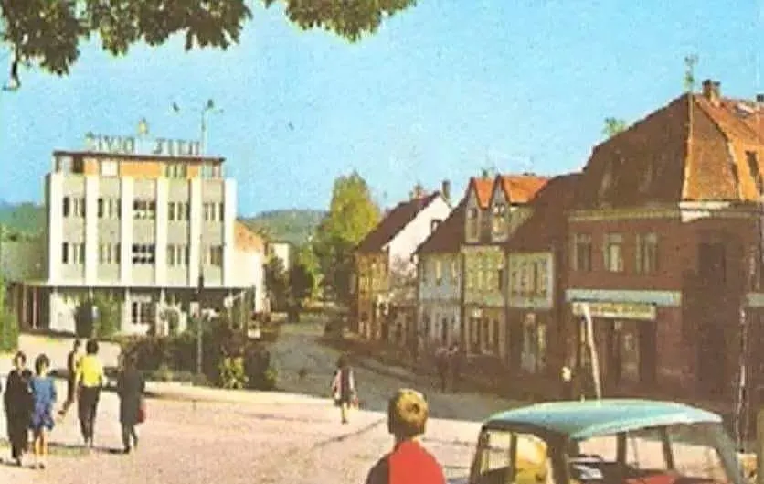
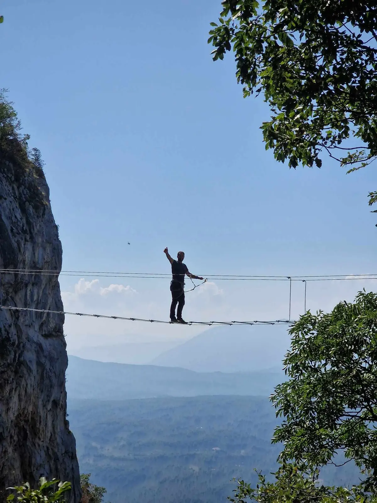

Places
Around
Sanski Most
History
How the town got its name
The name comes from the river Sana, from the Latin sana (“healthy”), as in Aqua Sana. In 1717, in the Ottoman period, the fortress town is mentioned as Džisr-i Sana (džisr = bridge).
Through the centuries
- c. 2600 BC
People of the Vučedol culture live in Hrustovača cave. The finds are distinctive enough that archaeologists speak of a separate Hrustovo type of the culture.

Hrustovača cave today - 6th to 3rd c. BC
An Iron Age settlement with a necropolis of 176 graves.
- Antiquity
The Maezaei, an Illyrian people, live in this area. The Romans conquer them and set up a mining district between the Sana and the Japra.
- 1244
A charter of King Béla IV is the oldest known document that names the Sana, together with the counties of Dubica, Mren and Vrbaška.

The counties of Sana and Mren before the Ottomans - 1374
Kamengrad is first mentioned, then held by the Babonić Blagajski princes; the area belongs to the Sana county (župa).

Kamengrad today - 1498-99
The Ottomans take the area. Tradition says Sultan Mehmed the Conqueror prayed in the open below Kamengrad; a musalla was made on that spot.

The “Musalla” of Sultan Mehmed II, Donji Kamengrad - 16th c.
The Hamzibeg Mosque is built (before 1557).

Hamzibeg Mosque with one minaret, 1946 - 1878
The Austro-Hungarian army enters Sanski Most on 8 September without a fight. The town becomes a district seat and begins to grow on the right bank of the Sana.

The town square and the Unkić house, early 20th century - 1922
NK Sana is founded. The first football was brought to town in 1913 by Branko Juzbašić, a student in Prague.

One of the first football teams of Sanski Most (coloured) - 1939
The townspeople and the municipality build the Sokolski dom, and a new concrete town bridge already crosses the Sana.

From the new concrete bridge towards Mahala and the Hamzibeg Mosque, November 1939 - 1944
The Second Session of ZAVNOBiH is held here; it adopts the Declaration on the Rights of Citizens of Bosnia and Herzegovina.

The Sokolski dom building, in a book - 1971
In the census the municipality has 62,102 people, the tenth largest of the hundred municipalities in Bosnia and Herzegovina.

Marshal Tito Square, early 1970s - 1992
After the Army of Republika Srpska takes control of the municipality, non-Serb civilians are killed and held in camps; the killed residents are later found in about 30 mass graves. On 31 May, civilians from the village of Begići are killed on the Vrhpolje bridge; in June the Hamzibeg Mosque is demolished.
- 1995
The Bosnian Army enters the town in Operation Sana 95, on 9 and 10 October. Sanski Most marks 10 October as Liberation Day and Municipality Day.
- 2000
The Hamzibeg Mosque reopens after reconstruction.

The Hamzibeg Mosque today - 2014
The Sana floods the town again; people get through the streets by boat.

By boat through town, 2014 - 2024
In September a via ferrata opens on Mulež, on a rock wall 90 m high.

Mulež
Sanski Most
In numbers
-

56 m
The drop of the Bliha waterfall.
-
9
Rivers meet in and around the town.
-
142 km
The length of the Sana river, which flows into the Una at Novi Grad.
-
1374
The year Kamengrad fortress is first mentioned.
-
4
Minarets on the Hamzibeg Mosque, reportedly the only mosque in Bosnia and Herzegovina with four.
-
176
Graves in an Iron Age necropolis from the 6th–3rd century BC.
Nine rivers
The town on
nine rivers
The Sana is about 142 km long and flows into the Una at Novi Grad.
- Sana
- Sanica
- Dabar
- Zdena
- Bliha
- Majdanska rijeka
- Japra
- Sasinka
- Kozica